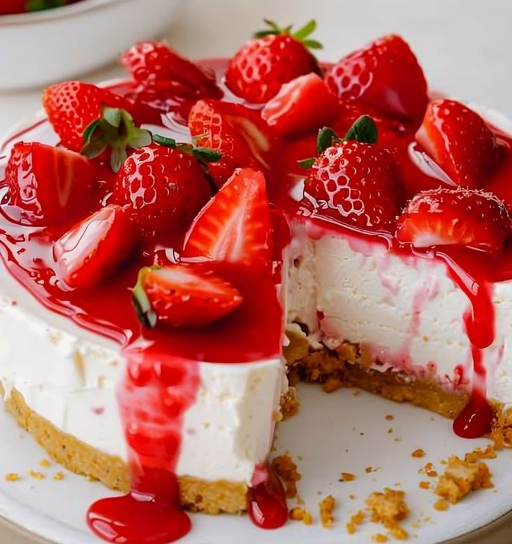

Strawberry Cheesecake Recipe!

Step 1 : Preheat oven to 325º and grease a 9” springform pan with cooking spray.
Step 2 : Make cheesecake mixture: In a large bowl using a hand mixer, beat cream cheese and sugar until combined. Add eggs and beat until combined, then add sour cream, vanilla and lemon zest.
Step 3 : Make crust: Stir together graham cracker crumbs, butter, sugar, and salt until completely moist. Spray a 9” springform pan with cooking spray and press graham mixture into prepared pan until packed. Pour cheesecake mixture over crust.
Step 4 : Bake until slightly jiggly in the center, about 1 hour 10 minutes. Let cool 1 hour in oven, then refrigerate until completely cool, at least 4 hours and up to overnight.
Step 5 : Make glaze: In a small saucepan over medium heat, combine strawberry preserves and lemon juice. Whisk constantly until the mixture is smooth.
Step 6 : Top the cheesecake with strawberries, then brush the glaze over strawberries. Slice into wedges and serve cold.